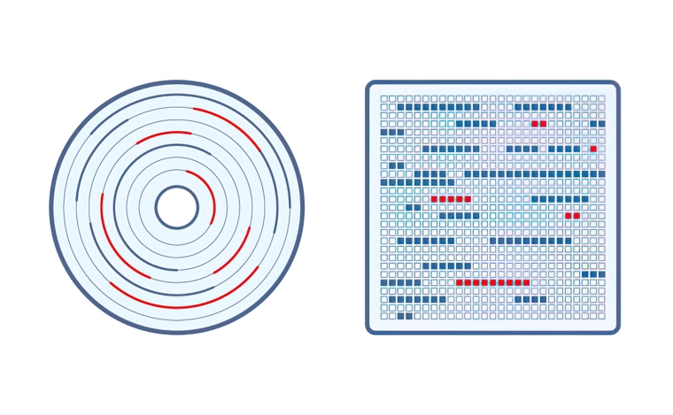

Как это работает. Откуда Windows берет информацию об устройстве
Раньше, до появления технологии Plug and Play, для подключения к системному блоку какого-либо периферийного устройства, неважно, будь то мышь, принтер или внутренняя плата расширения типа звуковой карты, необходимо было вручную осуществлять конфигурирование оборудования. Это означало самостоятельное устанавливать джамперы и перемычки на устройстве. Подобная ситуация порождала многочисленные проблемы и даже могла привести к выходу устройств из строя.
Технология Plug and Play позволила делать всю рутинную работу по настройке устройств автоматически за пользователя, попутно экономя ему много времени и сил. Технология Plug and Play позволяет подключать устройства «на ходу», без перезагрузки компьютера, а сам процесс распознавания новых устройств занимает всего несколько секунд. Стандарт PnP теперь поддерживают практически все внешние порты и шины компьютера, такие, как USB, PCI, COM, и.т.д.
Что такое технология Plug-and-Play Что такое технология Plug-and-Play Device Stage
Plug and Play (сокр. PnP, дословно с английского означает «подключил и играй») - технология, предназначенная для быстрого определения и конфигурирования устройств в компьютере и других технических устройствах.
Когда вы включаете операционную систему поддерживающую принцип PnP, ответственным за слаженную работу windows и «железа» является BIOS. Этот принцип одинаков для всех ОС с пользовательским интерфейсом. BIOS определяет подключенные устройства, основываясь на их идентификаторах – кусочках кода, которые прошиты в чипы памяти устройств. После считывания информации об устройстве, BIOS передаёт эти данные Windows.
Иным словами, при подключении к компьютеру какого-либо нового (еще не присутствовавшего в системе) устройства оно определяется автоматически. При этом после установки драйвера, устройство можно использовать в работе сразу же, минуя какие-либо ручные манипуляции по установке драйверов.
Когда подключаете к компьютеру новое устройство вы видите


Это как раз и происходит работа Plug and Play( PnP). Операционка автоматически обнаруживает драйвер в своей базе данных и устанавливает его на компьютер. В редких случаях драйвер придется искать в ручную или использовать посторонние программы.
Если у вас не работает PnP, то скорее всего у вас отключена данная служба. Чтобы открыть включить ее:
- 1) Открываем Панель управления
- 2) Переходим в раздел Администрирвание, в нём ищем Службы
- 3) В службах ищем строку с наименованием Plug and Play. Жмем 2 раза по ней и меняем тип запуска автоматически, и нажимаем запустить
- 4) После чего нажимаем применить и закрываем окошко. Служба будет включена и будет работать
Plug and Play значительно упрощает пользователю работу с компьютером и установку нового оборудования, тем не менее, в своей основе она довольно сложна.
Принцип работы технологии в упрощенном виде выглядит так – после включения компьютера и проверки оборудования, до загрузки операционной системы специальная программа, хранящаяся в BIOS, получает от каждого устройства уникальный идентификатор, содержащийся в специальной ячейке памяти устройства, и конфигурирует устройства, необходимые для загрузки системы.
Принцип Plug and Play от Microsoft в схеме

Исходное состояние После того, как управляющая программа Plug and Play привязала необходимые аппаратные ресурсы к устройству, она посылает пакет запроса ввода-вывода (IRP), указывая, что все драйверы устройства приведены в состояние боевой готовности. Устройство могло быть только что установлено и запускается впервые, а может было перезапущено после остановки в его работе при повторном балансировании элементов интерфейса системы (под лихо закрученной последней фразой понимается пероформление, например, списка устройств в окне Мой компьютер при добавлении нового устройства к системе).
Подготовка к отключению Управляющая программа Plug and Play посылает запрос драйверу, чтобы тот убрал из системы программное обеспечение удаляемого устройства. Система это делает в тот момент, когда пользователь удаляет устройство с помощью функции «Удаление устройства из системы», щёлкая по значку в трее, сразу и без предупреждения выдёргивает шнур USB из гнезда или пытается обновить драйверы устройства.
Немедленное (внзапное) отключение Ууправляющая программа Plug and Play посылает запрос драйверу, оповещая его, что устройство удалено из системы. В ответ драйвер прекращает подачу питания на устройство и предпринимает дополнительные (если необходимо) меры по удалению устройства
Подготовка к удалению Управляющая программа Plug and Play посылает запрос драйверу, может ли он сейчас остановить устройство. Если все загруженные для этого устройства драйверы отвечают утвердительно, они же и вводят устройство в состояние «Устройство может быть удалено».
Состояние «Выключено» Управляющая программа Plug and Play держит драйверы устройства в состоянии готовности ко включению.
Впоследствии, после загрузки операционной системы, эти идентификаторы также используются для конфигурирования устройств. В ОС Windows конфигурированием занимается специальная служба «Диспетчер устройств». В задачи этой службы входит распределение системных ресурсов и разрешение конфликтов между устройствами. Также операционная система отслеживает и контролирует процесс «горячего» подключения и отключения новых устройств.
Диспетчер устройств
Диспетчер устройств Драйвер это Для чего нужны драйвера Драйвер Windows Алгоритм установки драйвера Определение ИД устройства
Инструмент «Диспетчер устройств», присутствующий в большинстве версий Windows, используется для управления установленным оборудованием. С помощью этого инструмента вы можете найти все установленные аппаратные устройства, такие как мониторы, сетевые адаптеры, видеоадаптеры, клавиатуры, дисководы, аудиовходы и выходы, звуковые, видео и игровые контроллеры и т.д. Если есть проблема с любым установленным оборудованием или связанных драйверов, диспетчер устройств можно использовать для устранения неполадок
Через диспетчер устройств вы можете выполнить следующие действия:
- 1 - Просмотреть список всего оборудования, установленного на вашем компьютере
- 2 - Определить, какой драйвер устройства установлен для каждого устройства
- 3 - Управлять и обновлять драйвера устройств
- 4 - Установить новые устройства
- 5 - Отключить, включить и удалить устройства
- 6 - Использовать откат драйвера для возврата к предыдущей версии драйвера
- 7 - Устранить неполадки устройства
С помощью диспетчера устройств вы можете получить информацию об установленных аппаратных устройствах и драйверах, а также отключить конкретное устройство, обновить или удалить драйверы автоматически или вручную, откатить драйвер к его предыдущему состоянию (версии), выполнить сканирование на предмет изменений оборудования и настроить параметры управления питанием. Если некоторые устройства «скрыты», вы можете раскрыть их с помощью диспетчера устройств.

Окно диспетчера устройств делит все составляющие компьютера на категории. Чтобы найти конкретное устройство нажмите на стрелку рядом с его категорией или двойным кликом по её заголовку. Это позволит открыть раздел, со всеми устройствами, входящими в него. После вы можете нажать двойным кликом мыши на устройство для просмотра его свойств, статуса и информации о драйверах.
| # | Категория | Описание |
|---|---|---|
| 1 | DVD-дисководы и дисководы компакт-дисков | Отображает все диски CD и DVD, которые в настоящий момент обнаружены и установлены в Windows |
| 2 | Аудиовходы и аудиовыходы | Перечисляет все устройства связанные с аудио входом и выходом. Например, динамики, внутренние динамики, микрофон, наушники, USB аудиоустройства. |
| 3 | Батареи | Показывает любые найденные батареи. Категория показывает только ACPI совместимые батареи, питающие компьютер. Другие элементы питания, такие как CMOS-аккумулятор, могут находиться в разделе "Системные устройства". |
| 4 | Видеоадаптеры | Отображает все обнаруженные системой видеокарты |
| 5 | Дисководы гибких дисков | Показывает флоппи-диски, установленные на компьютере |
| 6 | Дисковые устройства | Отображает все жесткие диски, найденные на компьютере |
| 7 | Звуковые, игровые и видеоустройства | Отображает звуковую карту, устройства для захвата видео, кодеки и игровые контроллеры, установленные в настоящие время. Обратите внимание, что ваша видеокарта будет отображаться в разделе "Видеоадаптеры", а не в этой категории Диспетчера устройств. |
| 8 | Клавиатуры | Показывает все обнаруженные клавиатуры. |
| 9 | Компьютер | Эта категория показывает весь ваш компьютер как одно устройство. Может пригодиться при внесении каких-либо изменений непосредственно в ваш компьютер. |
| 10 | Контроллеры IDE ATA/ATAPI | Отображает каждый из контроллеров ATA или ATAPI, обнаруженных в настоящие время на материнской плате |
| 11 | Контроллеры USB | Перечень каждого из USB-устройств, контроллеров и хабов, обнаруженных Windows |
| 12 | Переносные устройства | Например, внешний жесткий диск |
| 13 | Мониторы | Показывает все найденные мониторы |
| 14 | Мыши и иные указывающие устройства | Отображает все компьютерные мыши и любые другие указывающие устройства, подключенные к компьютеру |
| 15 | Процессоры | Если на вашем компьютере несколько процессоров или многоядерный процессор, все они будут перечислены в этом разделе |
| 16 | Сетевые адаптеры | Показывает обнаруженные сетевые карты компьютера |
| 17 | Системные устройства | В этой категории показываются остальные системные устройства. Например, системный динамик и таймер и шина PCI |
| 18 | Устройства HID (Human Interface Devices) | Отображает все HID-устройства обнаруженные в данный момент Windows. Например, игровые джойстики, рули, и другие USB устройства |
| 19 | Устройства обработки изображения | Список устройств с возможностью захвата видео или изображения. Например, веб-камера ноутбука |
В зависимости от компьютера, в диспетчере устройств могут появляться новые или исчезать некоторые категории. Например, гнездо PCMCIA, многофункциональные адаптеры (принтеры и т.п.), контроллеры SCSI, адаптеры хоста SD (картридеры), датчики (сенсорные устройства - реальные и виртуальные GPS устройства).
Поиск, установка и обновление драйверов
Драйвер (от англ. driver – водитель, управляющий чем-либо) – это программное обеспечение, которое позволяет организовать связь операционной системы и подключенного к компьютеру аппаратного обеспечения. При подключении любой "железяки" к ПК система требует соответствующий драйвер. Даже к одному и тому же устройству при работе в различных операционных системах требуются разные драйвера.
Основное предназначение драйверов – это налаживание взаимодействия между аппаратными устройствами и операционной системой. Операционная система или программное обеспечение работает лучше всего, когда она может использовать стандартные команды и иметь одинаковую функциональность по всему оборудованию независимо от производителя.
Существуют различные способы загрузки и установки драйверов. Драйверы Microsoft можно загрузить с помощью утилиты Windows Update. Драйверы разных производителей могут быть загружены с веб-сайта производителя. Для этого необходимо зайти на их сайт, найти продукт и загрузить последние версии драйверов. Затем вы сможете установить эти драйверы с помощью встроенного мастера установки или диспетчера устройств. Типичная первоначальная установка драйверов сегодня происходит автоматически благодаря спецификации Plug and Play. После подключения оборудования Windows 10 распознает его и запустит программу установки драйвера.
Что представляет из себя сам пакет драйвера?
Общие составляющие структуры инталляционного пакета установки драйвера:
-
INFКлючевой компонент установочного пакета драйвера - файл, описывающий процесс инсталляции драйвера. inf-файл разделен на секции и состоит из инструкций, указывающих системе на то, как именно устанавливается драйвер: они описывают устанавливаемое устройство, исходное и целевое местонахождение всех компонентов драйвера, различные изменения, которые необходимо внести в реестр при установке драйвера Windows, информацию о зависимостях драйвера и прочее. .inf-файлы связывают физическое устройство с драйвером, контролирующим данное устройство.
-
Двоичный файл(ы) драйвераПакет, как минимум, должен содержать .sys- или .dll-файл ядра драйвера. Фактически один-единственный .sys-файл (в крайнем случае) может быть установлен (с оговорками) в ручном режиме через правку реестра.
-
CATФайл каталога, подписанный цифровой подписью. Данные файлы содержат цифровые подписи каталогов и играют роль сигнатуры для файлов пакета, с помощью которой пользователь может определить происхождение пакета и проверить целостность файлов пакета драйвера. В сведениях о драйвере содержится информация о поставщике, версии файла, цифровой подписи и авторских правах.
Структура драйвера
Содержание INF файла
CAT файл (открывается как сертификат)
Поиск драйвера (сбор данных)
Прежде чем устанавливать все драйвера подряд, нужно выяснить какой именно чип у вас стоит и какой для него нужен драйвер. На этом месте начинаются проблемы. Как выяснить какой модуль стоит?
Именно для этой цели и был придуман идентификатор устройства. Он содержит информацию о производителе и модели оборудования, что позволит вам избежать огромной кучи проблем и установить именно тот драйвер, который нужен.
Технически этот идентификатор являет собой набор строк, которые хранятся непосредственно в самом устройстве или микросхеме. В зависимости от типа оборудования и способа подключения они имеют вид VENxxxx&DEVxxxx, VIDxxxx&PIDxxxx, ACPI... и т.д.. Вместо xxxx обычно находятся 4 цифры в шестнадцатеричной системе (0 - 9 и A - F). Первая четверка цифр говорит о производителе, вторая о модели устройства. Иногда к ним добавляются и другие строки вроде SUBSYS, которые говорят о модификации.
VID и PID — это уникальные идентификаторы USB устройств. VID — идентификатор производителя, PID — идентификатор устройства. По значением VID и PID можно предположительно определить тип контроллера установленного во флэш и производителя устройства.
Чтобы найти нужное ПО, необходимо точно знать наименование модели устройства и версию ОС Windows, установленную на компьютере. Если информации о комплектующих или внешних устройствах нет в документации, то обращаемся к помощи интернета. Открываем Диспетчер устройств и находим устройство, которое нуждается в установке либо переустановке драйверов.
Кликаем по наименованию устройства с желтым треугольником и переходим во вкладку «Сведения». Здесь в выпадающей строке выбираем значение «ИД оборудования» и копируем верхнюю строку из блока «Значение».
Для нас это набор символов, в котором система зашифровывает наименование модели и другие данные об устройстве. Чтобы понять эту информацию, достаточно вставить скопированные сведения в строку поиска любого браузера.
Установка драйверов в автоматическом режиме
С автоматической все просто. У нас есть файл с расширением «*.exe», который активирует программу установки. Мы его запускаем, а дальше следуем указаниям программы установки (обычным пользователям следует на всех этапах нажимать кнопку «Далее»). Программа установки сама проверит драйвер на совместимость с системой и устройством и установит его. После установки просто перезагрузите компьютер. Все предельно просто.
Установка драйверов в ручном режиме
Ручная установка применяется в том случае, если драйвер представлен не в виде «*.exe» файла, а в виде набора файлов с расширениями «*.inf», «*.sys» и «*.dll». Тогда придется выполнить следующие этапы:
1. Запустить обновления драйвера для устройства. (нажимаем правой клавишей мыши по названию устройства в диспетчере устройств и в появившемся меню выбираем пункт «обновить драйверы»).
2. Откроется окно, в котором необходимо выбрать пункт «Выполнить поиск драйверов на этом компьютере”.
3. Проверяем место, где будет осуществлен поиск драйверов, при необходимости меняем (для этого нажимаем на кнопку «Обзор»). Устанавливаем галочку возле надписи «Включая вложенные папки». Нажимаем кнопку «Далее».
4. На следующем этапе система произведет поиск драйверов в указанном месте и, если подходящий драйвер будет найден, установит его.
Файловая система
Файловая система Типы файловых систем Что такое файловая система Основый файловых систем
Пользователю компьютерных электронных устройств редко, но приходится сталкиваться с таким понятием, как «выбор файловой системы». Чаще всего это происходит при необходимости форматирования внешних накопителей (флешек, microSD), установке операционных систем, восстановлении данных на проблемных носителях, в том числе жестких дисках. Пользователям Windows предлагается выбрать тип файловой системы, FAT32 или NTFS, и способ форматирования (быстрое/глубокое). Дополнительно можно установить размер кластера. При использовании ОС Linux и macOS названия файловых систем могут отличаться.
Что такое файловая система?
Файловая система — это способ организации и хранения файлов на жестких дисках, флешках. Файловая система — это инструкция по заполнению этих кластеров информацией.
Структура данных, которая используется для хранения и управления файлами на томе.Файловая система отслеживает свободное и занятое пространство, поддерживает папки и имена файлов, сохраняя физическое положение файлов на диске.
Например, записывая фотографию, компьютер разбивает файл на части. Каждому кусочку файла соответствует ячейка на поверхности магнитной пластины диска. При этом, если любая программа обратится к нужному файлу, то ни она, ни диск не будут знать, что это за файл, где он расположен, как он называется, сколько весит и какие ячейки занимает в накопителе. Единственное, что известно программе — это имя файла, его размер и другие атрибуты, которые она передает файловой системе как условный знак для поиска этого файла в ячейках.
Чтобы понять, кто за что отвечает и кем является, рассмотрим структуру на книгах и библиотеках. Так, в цепочке «пользователь-файл» есть несколько действующих лиц, без которых работа системы невозможна:
-
НакопительХранилище данных
-
ПользовательТот кто обращается за файлом (книгой)
-
ФайлЭто книга с понятным названием (атрибутом) или другим условным опознавательным знаком
-
Драйвер файловой системыЭто библиотекарь, который выступает в роли посредника или проводника между читателем и книгой. Или между пользователем (компьютером, операционной системой) и файлом (ячейками с информацией в микросхемах памяти или на магнитных пластинах).
-
Файловая системаПорядок, в соответствии с которым в библиотеке расставлены книги, а также каталог, с помощью которого специалист находит книги. Системы бывают разные: книги можно расставить по росту, цвету обложки, жанру, году выпуска или названию в алфавитном порядке. На диске файловая система отвечает за организацию файлов.
Основные функции файловых систем
Файловая система отвечает за оптимальное логическое распределение информационных данных на конкретном физическом носителе. Драйвер ФС организует взаимодействие между хранилищем, операционной системой и прикладным программным обеспечением. Правильный выбор файловой системы для конкретных пользовательских задач влияет на скорость обработки данных, принципы распределения и другие функциональные возможности, необходимые для стабильной работы любых компьютерных систем. Иными словами, это совокупность условий и правил, определяющих способ организации файлов на носителях информации.
Основными функциями файловой системы являются:
- размещение и упорядочивание на носителе данных в виде файлов;
- определение максимально поддерживаемого объема данных на носителе информации;
- создание, чтение и удаление файлов;
- назначение и изменение атрибутов файлов (размер, время создания и изменения, владелец и создатель файла, доступен только для чтения, скрытый файл, временный файл, архивный, исполняемый, максимальная длина имени файла и т.п.);
- определение структуры файла;
- поиск файлов;
- организация каталогов для логической организации файлов;
- защита файлов при системном сбое;
- защита файлов от несанкционированного доступа и изменения их содержимого.
Стили разделов
Что такое MBR / GPT MBR или GPT
Стили дисков MBR / GPT
С MBR / GPT впервые сталкиваются в процессе инициализации только что приобретённых новых жёстких дисков, либо в процессе переустановки Windows, когда при выборе места для установки получают внезапно ошибку «Установка Windows на данный диск невозможна».
В сообщении из которой, далее следует одно из пояснений ошибки:
- На выбранном диске находится таблица МВR-разделов
- Выбранный диск имеет стиль разделов GPT
GPT и MBR – эти стили разделов жёсткого диска, их также называют стили разметки или таблицы разделов диска. Всё это синонимы одного понятия — способа хранения сведений о разделах жёсткого диска. Сведений о начале и конце разделов, а также о принадлежности каждому из них секторов, об их атрибутах (основной, логический и пр.), о том, какой из разделов является загрузочным и т.п.
Если мы подключим к компьютеру новый или старый, но пустой жёсткий диск, он не будет видеться системой Windows, пока не выполниться инициализация диска в управлении дисками – входящей в состав операционной системы утилитой, или с помощью сторонних и разнообразных программ по управлению дисками. В штатной утилите управлении дисками инициализация подключённых пустых носителей запускается автоматически при открытии утилиты. И система предлагает нам указать, какой мы хотим задать стиль разделов:
В окне инициализации Windows подсказывает нам, какой из стилей выбрать опцией предустановки. Условие, по которому определяется предустановка стиля – какой стиль имеет диск, на котором установлена операционная система тот и будет предлагаться на новый носитель данных.
Различия MBR / GPT
MBR диск
Загрузочная запись располагается в начальном секторе диска. В ней записана таблица разделов — данные об их организации на накопителе и информация для БИОС, для начала загрузки ОС.
MBR преимущества:
- Совместимость с множеством операционных систем — с абсолютным большинством
- Работает действительно стабильно и проверен временем
- Работает и с BIOS, и с UEFI
- Работает с со всеми версия Windows и 32 бит, и 64 бит
MBR минусы:
- Ограничение на 4 главных раздела. Но можно сделать один из них расширенным и делать подразделы уже на нем, но это не всегда удобно
- Один раздел не может быть более 2 терабайт размером, так как, используется 32 бита для записи его длины, выраженной в секторах
- При повреждении первого сектора — весь накопитель становится нечитаемым, так как, там хранится загрузочная запись с информацией обо всей структуре
- Нет мониторинга проблем в работе и тяжело понять были ли повреждены данные
GPT диск
Современный стандарт определения структуры разделов на диске. Гибкий, без ограничений на количество создаваемых разделов и их размера. Применяются идентификаторы GUID для построения структуры. Главная загрузочная запись располагается во втором секторе, а в первом хранится, также MBR-запись. Сделано это в целях защиты, чтобы система не подумала, что накопитель пустой, и чтобы была совместимость со старыми версиями ОС (не всегда она есть).
GPT преимущества:
-
GPT хранит таблицу разделов в начале и в конце диска — при повреждении одной из них, всегда есть копия для восстановления
Если информация повреждена, GPT замечает проблему и пытается восстановить поврежденные данные с другого места на диске.
MBR не может узнать о повреждении информации. Выувидите, что возникла проблема, только если не сможете загрузить систему или один из разделов диска исчезнет - Нет ограничения на количество разделов — задается операционной системой
- GPR хранит CRC информацию контрольной суммы для заголовка и таблицы, что позволяет обнаруживать в них ошибки и исправлять
- Мониторит накопитель на наличие проблем и по возможности позволяет системе исправить их
- Практически неограниченный размер для томов
- Есть собственный мультизагрузчик
GPT минусы:
- Не все ОС поддерживают
- Работает с 64-битной Windows и только
- Работает только с UEFI
Структура разделов
- Служебный раздел на 100 или 350 Мб с файловой системой NTFS, где хранится загрузчик
- Диска С
- NTFS-раздел восстановления на 350 или 500 Мб
- EFI-раздел с FAT32 – раздел загрузчика
- Диск С
GPT / MBR разметка при установке Windows
Жёсткий диск получает стиль разметки при инициализации средствами Windows или сторонними программами по управлению дисками. В процессе установки Windows на пустой диск – на незанятое пространство, стиль разметки задаётся автоматически.
Если в BIOS компьютера активен режим UEFI, то автоматически будет выбран стиль разметки GPT, если на компьютере нет UEFI или в BIOS указан режим Legacy, то автоматом выберется MBR.
Преобразование стилей разметки
GPT-диски могут преобразовываться (конвертироваться) в MBR, а диски MBR — в GPT. С участием штатных средств Windows этот процесс невозможен без потери разметки носителя и хранящихся на нём данных. Сторонние программы управлению дисками могут выполнять преобразование без потери разметки и данных носителя. В отдельных случаях ещё без необходимости переустановки Windows.
Типы дисков
Базовый и динамический диск Что такое динамические диски Динамический диск Динамический диск. История Динамический или базовый. Что лучше Базовый или динамический для SSD Базовые и динамические диски (Docs Microsoft)> Динамический или базовый. Что лучше Основные понятия. Acronis Работа с дисками - базовые и динамические диски Составной и чередующийся том Создание простого, составного, чередующего, зеркального тома Что такое базовый том жесткого диска. Чем отличается раздел диска от тома Чередующийся том (RAID 0)
Базовый диск
В системе Windows подключенные жесткие диски по умолчанию при инициализации получают тип базовых дисков.
Базовые, они же основные диски совместимы со всеми версиями Windows. Это обычные диски, на которых создаются основные (первичные) и логические разделы. Тип базового диска определен для большинства носителей информации в составе компьютерных устройств.
Базовые диски обычно можно использовать с любой операционной системой, в том числе слюбой версией Windows.
На базовом диске может храниться один или несколько томов (разделы), которые называются базовыми.
Базовый том не может занимать более одного диска.
Случаи использования базовых дисков:
- если на машине только один жесткий диск
- если на машине установлена старая ОС Windows или ОС, отличная от Windows
Операции выполняемые с базовым диском:
- Форматировать разделы и помечать нужный как активный
- Создавать и удалять основные и дополнительные разделы
- Создавать и удалять логические диски внутри дополнительного раздела
- Преобразовать базовый диск в динамический
Динамический диск
Динамические диски поддерживаются только ОС Windows, начиная с Windows 2000.
На динамическом диске может храниться один или несколько томов, которые называются динамическими. В отличие от базового тома, динамический том может занимать несколько дисков.
Случаи использования динамических дисков. Динамические диски наиболее эффективны,если на машине несколько жестких дисков. В этом случае доступны следующие возможности:
- Создание больших томов, занимающих несколько дисков
- Обеспечение отказоустойчивости системы и данных путем добавления зеркального томана другом диске (например, для тома с операционной системой). Если диск с одним изтаких зеркал выходит из строя, потери данных тома не происходит
Преимущества динамических дисков
- Формирование разделов на базе нескольких носителей
- Задействование программного RAID для файлохранилищ
- Зеркалирование самой Windows
Динамические диски:
- Задействуются на дисках со стилем разметки как MBR, так и GPT
- Предусматривают создание разделов с файловыми системами NTFS и exFAT
- На MBR-дисках не делят разделы на основные и логические, у них свои типы разделов в зависимости от их функциональности
- Предусматривают запуск не более одной Windows, её установка на другие разделы невозможна
Операции выполняемые с динамическим диском диском:
- Создавать стандартные и отказоустойчивые тома
- Удалять зеркальный диск из зеркального тома
- Расширять простые или составные тома;
- Разделять том на два тома
- Восстанавливать зеркальные тома или тома RAID-5
- Повторно активизировать диск, находящийся в состоянии Missing или Offline
- Преобразовать динамический диск обратно в базовый (для чего потребуется предварительное удаление всех существующих томов)
Динамические диски поддерживают несколько типов динамических томов:
- Простые
- Составные
- Чередующиеся
- Чередование с контролем четности
- Зеркальные
После преобразования диска любые разделы, существующие на базовом диске, преобразуются в динамические простые тома, и затем вы можете создавать любые дополнительные динамические тома, необходимые на динамическом диске. Создать динамические диски можно с помощью утилиты Управление дисками
Простой том
Простые диски практически ничем не отличаются от обычных, за исключением того, что при переразбиении диска отпадает необходимость в перезагрузке. Простые тома размещаются на одном физическом диске. При увеличении размеров простых томов за счет свободного пространства, находящегося на других дисках, они автоматически превращаются в составные разделы. Физически простой том может занимать две или несколько областей дискового пространства,которые логически можно представить как одну непрерывную область
Составной том
Составные состоят из одного или нескольких простых томов, находящихся на разных физических дисках, размеры которых не обязательно равны, объединенных в единый логический том. Составной том может размещаться на 32 дисках. В отличие от зеркального тома и тома RAID-5, составные тома не являются отказоустойчивыми. В отличие от чередующихся томов, составные тома необеспечивают более быстрого доступа к данным. Основным недостатком составных томов является то, что если какой-либо диск в томе выходит из строя, вы теряете доступ ко всем данным этого тома.
Чередующийся том
Том, размещаемый на двух или нескольких динамических дисках, данные которого равномерно распределены по блокам равного размера (именуемым блоками чередования) на этих дисках. Доступ к данным на чередующихся томах обычно происходит быстрее, чем на динамических томах других типов, поскольку выполняется одновременно на нескольких жестких дисках. В отличие от зеркального тома, чередующийся том не содержит избыточной информации, поэтому не является отказоустойчивым. Чередующийся том называют также «томом RAID-0» Объединяют несколько физических дисков в один логический том, но данные записываются вперемешку, то есть первый сектор - на первый жесткий диск, второй — на второй и т.д. В результате этого оба жестких диска работают параллельно, и, если они подключены к различным IDE-контроллерам, скорость обмена пропорционально возрастает. Однако если хотя бы один диск откажет, из данных образуется «решето», не подлежащее восстановлению.
Чередование с контролем четности
Чередование с контролем четности соответствует массиву RAID уровня 5. Состоит из трех или более дисков (максимум — 32). Данные пишутся на все диски, кроме последнего, где хранятся коды коррекции ошибок, с помощью которых можно восстановить любой другой отказавший диск.
Зеркальный том
Отказоустойчивый том, данные которого дублируются на два физических диска. Каждая из двух частей зеркального тома называется «зеркалом».
Все данные с одного диска копируются на другой, чтобы обеспечить избыточность данных.Если происходит сбой одного жесткого диска, данные остаются на другом жестком диске. Зеркальный том иногда называется «томом RAID-1».
Два или более динамических диска, объединенных в один логический, причем запись дублируется на все диски (как в RAID’е уровня 1), и при выходе одного винчестера из строя он может быть заменен без потери данных (а в случае поддержки горячей замены - и без остановки сервера). Зеркалировать можно не только простые, но также составные и чередующиеся динамические диски. Платить за надежность приходится не только дисковым пространством, но и производительностью, поскольку количество контроллеров не безгранично и зеркальные диски обычно цепляются на уже задействованные контроллеры.
Преобразование базового в динамический
Сделать из базового диска динамический довольно просто (в отличие от противоположного процесса). Это можно сделать вне зависимости от того, содержится ли на нём разметка или информация.
Для преобразования необходимо открыть утилиту Управления дисками
Затем кликните правой кнопкой мыши по базовому диску (в некоторых версиях Windows он обозначен как «Основной» – это одно и то же) и выберите пункт, отвечающий за преобразование типа диска.
Установите галочки возле дисков, которые намереваетесь преобразовать, и нажмите «Ок». Дальнейший процесс автоматический – компьютер сделает всё за вас. Далее уже можем с помощью контекстного меню консоли распределять дисковое пространство.
Преобразование динамического в базовый
перейти с динамического диска на базовый довольно просто. А если наоборот, то это уже сложнее. Боле того, данный процесс довольно рискованный, велик шанс потерять сохранённые на диске данные при таком форматировании.
Утилита Управление дисками
Утилита управления дисками – штатная утилита, которая предоставляет администраторам графический инструмент для управления дисками и томами в Windows 10.
Управление дисками используется для настройки параметров дисков, установленных на компьютере, таким как жесткие диски (внутренние и внешние), оптические диски и флэш-диски. Его можно использовать для разбиения дисков, форматирования дисков, назначения букв дисков и многого другого
Открыв утилиту Управление дисками, вы получите доступ к следующей информации:
- тома (разделы), которые инициализированы компьютером
- тип диска, базовый или динамический
- тип файловой системы, используемой каждым разделом
- состояние раздела и содержит ли он системный или загрузочный раздел
- емкость (объем пространства), выделенная для раздела
- объем оставшегося свободного места, после создания разделов или томов
- объем служебных данных, связанных с разделом
- Верхний раздел «Управление дисками» содержит список всех разделов, отформатированных или нет, которые распознает Windows
- Нижний раздел «Управление дисками» содержит графическое представление физических дисков, установленных на компьютере
Возможности, которые предоставляет утилита:
- Разбить диск
- Форматировать диск
- Изменить букву диска
- Сжать раздел
- Расширить раздел
- Удалить раздел
- Изменить файловую систему диска
Управление дисками – это место, где вы можете создавать и прикреплять файлы виртуальных жестких дисков в Windows 10 и Windows 8.
Это отдельные файлы, которые действуют как жесткие диски, вы можете хранить их на своём основном жестком диске или в других местах, например на внешних жестких дисках.
Чтобы создать файл виртуального диска с расширением VHD или VHDX, используйте меню «Действие» → «Создать виртуальный жесткий диск». Открытие осуществляется с помощью опции Присоединить виртуальный жесткий диск.